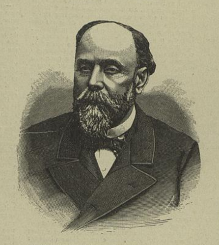

Nessas correspondências há muitos relatos de como era Portugal na época de Camilo como as perseguições direcionadas aos que criticavam o sistema de sociedade antigamente e faz analogia a corrupção “Eu o que mais temo é a corrupção temível da influência do capital que o autor pôde fazer chegar a Lisboa”. Camilo também faz menção a obra “críticos cancioneiros”
